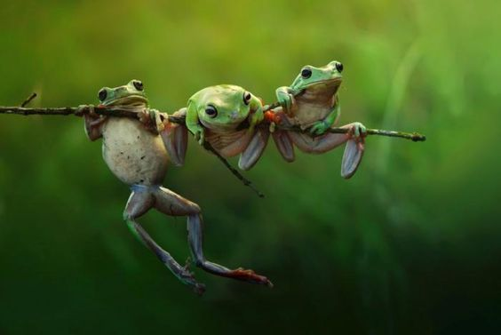

Cordados
Os cordados representam o grupo de animais do filo Chordata. São representados por alguns invertebrados aquáticos e todos os vertebrados: peixes, anfíbios, répteis, aves e mamíferos.
Características
A característica principal deste filo é que durante a fase embrionária todos apresentam tubo nervoso dorsal, notocorda, fendas faringianas e cauda pós-anal.
- Triblásticos
- Enterocelomados
- Metamerizados,
- Deuterostômios,
- Com simetria lateral
- Sistema digestório completo
Existem cerca de 45 mil espécies de cordados conhecidas, distribuídas em três subfilos: Urochordata (Urocordados), Cephalochordata (Cefalocordados) e Craniata ou Vertebrata.
Protocordados
Os protocordados são animais cordados invertebrados. O grupo possui poucos representantes e todos são pequenos animais marinhos. Os protocordados representam os cordados mais primitivos. São exemplos de protocordados as ascídias, as salpas e o anfioxo.
Urocordados
São animais marinhos sésseis que podem viver isolados ou em colônias. Geralmente, são encontrados grudados em rochas ou em algas maiores. Seu tamanho pode variar de alguns milímetros até 10 centímetros.
Características
- Representados pelas ascídias e salpas.
- Quando adultos, pouco se parecem com os cordados;
- Apresentam notocorda na região caudal durante a fase larval;
- São animais marinhos sésseis que podem viver isolados ou em colônias;
- São revestidos por uma túnica protetora, formada de tunicina. Daí o nome do grupo;
- Alimentam-se por filtração;
- Sistema circulatório parcialmente aberto;
- O sistema nervoso diferencia-se durante as fases da vida. Quando larva, consiste em um tubo nervoso. Em adultos, reduz-se a um glânglio nervoso sob a faringe.
Cefalocordados
São animais marinhos de corpo achatado lateralmente e afilado nas extremidades. Medem poucos centímetros. Enterram-se na areia, em posição vertical e deixam apenas a boca exposta, mas podem nadar em águas rasas. Em geral, sua anatomia se assemelha a de um peixe. Porém, não possuem uma cabeça diferenciada.
Características
- Representado pelo anfioxo, um pequeno animal transparente, com corpo em forma de lança;
- Possuem notocorda durante toda a vida, que serve como um esqueleto flexível;
- A boca é rodeada por filamentos, chamados de cirros bucais (característica marcante);
- Alimentam-se por filtração;
- Sistema circulatório fechado;
- São animais dióicos.
Vertebrados

É o maior e o mais diversificado grupo do filo Chordata, sendo constituído por aqueles animais que apresentam uma coluna vertebral como suporte axial do corpo
Cyclostomata
São vertebrados aquáticos e primitivos caracterizados pela ausência de mandíbula e pela presença de uma boca circular sugadora.
Características
- Corpo cilíndrico e cauda lateralmente comprida
- Ectotérmicos
- Possuem nadadeiras laterais ímpares
- Possuem olhos laterais sem pálpebras
- Epitélio liso, mucoso e sem escamas
- Linhas laterais sensíveis a vibrações
- Maioria parasita
- importantes necrófagos marinhos
- dióicos, com fecundação externa e desenvolvimento indireto
Gnathostomata
No grupo dos Gnathostomata está o maior número de vertebrados, que se destacam por apresentarem mandíbulas. Peixes, anfíbios, répteis, aves e mamíferos fazem parte desse grupo.
- CLASSE CHONDRICHTHYES
- Aquáticos
- Locomoção por nadadeiras
- Revestidos por escamas dérmicas placóides
- Pecilotérmicos
- Respiração por fendas branquiais
- Circulação fechada, simples e completa
- Sistema digestório completo
- Fecundação interna com muitas espécies ovíparas
- CLASSE OSTEICHTHYES
- Esqueleto ósseo
- Recoberto por escamas ciclóides
- Possuem bexiga natatória
- Respiração por fendas branquiais
- Circulação fechada, simples e completa
- Sistema digestório completo
- Reprodução é sexuada com fecundação externa e desenvolvimento indireto,
Anfíbios
São animais terrestres, que dependem da água para o desenvolvimento de suas larvas, bem como para a reprodução. Incluem-se aqui os sapos, rãs, pererecas, salamandras, tritões e cobras-cegas
Características
- Pele sem proteção, úmida e mucosa e bastante vascularizada
- Respiração branquial, cutânea e pulmonar
- Pecilotérmicos
- Sistema digestório completo terminando em cloaca
- Circulação dupla, fechada e incompleta
- Locomoção por quatro patas
- Sistemas nervoso com encéfalo, medula e 10 pares de nervos cranianos
- Dióicos, com reprodução sexuada, fecundação externa e desenvolvimento indireto.
Classificação
- Ordem Anura: sem cauda na fase adulta
- Ordem Urodela: com cauda na idade adulta
- Ordem Ápoda sem patas
Répteis

Estes animais possuem os membros locomotores implantados no corpo de forma quase horizontal, o que obriga o animal a praticamente arrastar a face ventral do corpo no chão durante a locomoção, são representados por crocodilos, jacarés, cobras, lagartos, tartarugas e outros
Características
- Terrestres
- Não precisam de água para reprodução
- Possuem pele seca
- São pecilotérmicos
- Possuem sistema digestório completo terminando em cloaca
- O sistema circulatório é duplo, fechado e incompleto.
- Eealizam respiração pulmonar e excreção por rins metanefros
- Reprodução sexuada, fecundação interna e desenvolvimento direto
- Ovíparos ou ovovivíparos
Classificação
- Ordem Rhyncocephaliarepresentado pelo tuatara.
- Ordem Squamata são répteis cujo corpo é recoberto por escamas. Existem duas subordens:
- Subordem Lacertílios lagartos e lagartixas.
- Subordem Ophidiacobras.
- Ordem Cheloniatêm o corpo revestido por um plastrão ventral e uma carapaça dorsal. Ex: tartarugas, cágados e jabutis.
- Ordem Crocodiliao corpo destes animais está revestido por placas dérmicas. São os jacarés e crocodilos.
Aves
São animais largamente distribuídos nos habitats do planeta, pois desenvolveram a capacidade de manter constante a temperatura corporal, ou seja, são homeotérmicos.
Características
- Possuem corpo coberto por penas
- Possuem asas
- Os ossos pneumáticos facilitam o voo
- A pele é seca com uma única glândula para lubrificar as penas
- Possuem papo e moela no sistema digestório
- A circulação é dupla, fechada e completa
- Ovíparos, com desenvolvimento direto e fecundação interna
- Chocam seus ovos pela necessidade de calor
Classificação
- Psitaciformescomo exemplos temos os papaguaios, periquitos e araras
- Falconiformescomo exemplos podemos citar os falcões, águias, gaviões, carcarás e abutres
Mamíferos
Os mamíferos são animais vertebrados pertencentes ao Domínio Eukaryota, Reino Animalia, Filo Chordata, Sub-filo Vertebrata e Classe Mammalia.
Características
- Possuem endoesqueleto ósseo
- Possuem glândulas mamárias
- A pele é queratinizada
- O corpo é revestido por pelos
- possuem glândulas sebácias e sudoríparas, e excretam ureia através da urina
- A circulação é dupla, fechada e completa
- A respiração é pulmonar, o sistema digestório completo e o nervoso é o mais desenvolvido entre os vertebrados
- Podem ser carnívoros, herbívoros ou onívoros
Classificação
- Prototérios:mamíferos com cloaca e ovíparos.
- Metatérios:mamíferos vivíparos que possuem bolsa ou marsúpio.
- Eutérios:mamíferos vivíparos placentários.